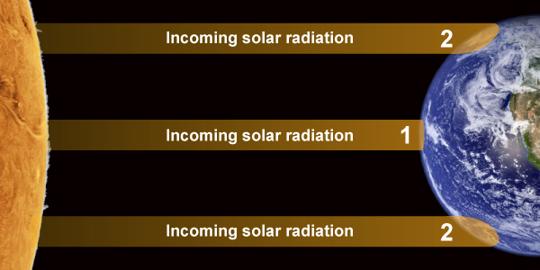

Introduction to Tropical Weather
Circulation of heat energy from the tropics generates weather that can impact any other location on the globe.
Circulation of heat energy from the tropics generates weather that can impact any other location on the globe.
The tropics refers to the region of Earth around the equator. The weather here is, on average, hot and humid.
The curve of the planet leads to the tropics receiving more direct solar radiation than the rest of the Earth and more than the region re-radiates back to space. This excess heat creates an energy imbalance that drives the circulation of the atmosphere.

Rising air created by the Sun's heat leads to abundant rainfall, and during certain periods, thunderstorms can occur every day.
Because a substantial part of the Sun's heat energy is used up in evaporation and rain formation, temperatures in the tropics rarely exceed 95°F (35°C). Meanwhile, at night, the abundant cloud cover restricts heat loss, and minimum temperatures fall no lower than about 72°F (22°C).
Being around the equator, the climate of the tropics isn’t as strongly affected by the orbital tilt of the planet and thus the high temperature is maintained with little variation throughout the year. Therefore, the seasons are not distinguished by warm and cold periods but by variation of rainfall and cloudiness.
Together, these factors also provide ideal conditions for the development of tropical cyclones (hurricanes and typhoons).